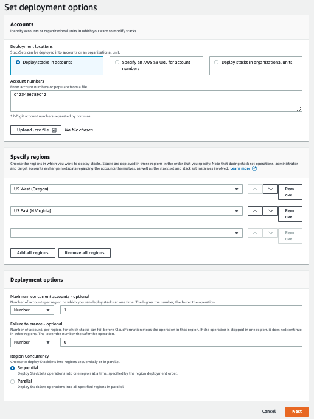
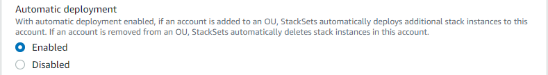

创建堆栈集
您可以在 AWS CLI 中使用 AWS Management Console 或使用 AWS CloudFormation 命令创建堆栈集。您可以使用 self-managed 或 service-managed 权限创建堆栈集。
使用 self-managed 权限，您可以将堆栈实例部署到特定区域中的特定 AWS 账户。为此，您必须先创建必要的 IAM 角色，以便在管理堆栈集的账户与要部署堆栈实例的账户之间建立可信的关系。
使用 service-managed 权限，您可以将堆栈实例部署到特定区域中由 AWS Organizations 管理的账户。使用此模型，您无需创建必要的 IAM 角色；StackSets 会代表您创建 IAM 角色。您还可以为将来添加到目标组织或组织单位 (OU) 的账户启用自动部署。启用自动部署后，如果将堆栈实例从目标组织或 OU 中删除，则 StackSets 会自动从账户中将其删除。
创建具有自行管理权限的堆栈集
使用 AWS Management Console创建具有自行管理权限的堆栈集
打开 AWS CloudFormation 控制台，地址：https://console.aws.amazon.com/cloudformation
。 -
从导航窗格中，选择 StackSets (堆栈集)。
-
在 StackSets (堆栈集) 页面顶部，选择 Create StackSet (创建堆栈集)。
-
在 Prerequisite - Prepare template (先决条件 – 准备模板) 下，选择 Use a sample template (使用示例模板)。
-
在选择示例模板下，从下拉菜单中选择启用 AWS 配置模板。选择下一步。

-
在 Specify StackSet details (指定堆栈集详细信息) 页面上，提供以下信息。
-
提供堆栈集的名称。堆栈集名称必须以字母字符开头，并且只能包含字母、数字和连字符。在本演练中，我们使用名称
my-awsconfig-stackset。 -
系统将提示您为 AWS Config 使用的参数指定值。有关这些参数的更多信息，请参阅《AWS Config 开发人员指南》中的使用控制台设置 AWS Config。在本演练中，我们将保留所有 AWS Config 参数的默认设置。
-
您可以基于日志内容，使用 TopicARN 和 NotificationEmail 参数通过电子邮件配置 Amazon Simple Notification Service (SNS) 更新。在本演练中，我们不配置 Amazon SNS 更新。
-
您可以使用 DeliveryChannelName 和 Frequency 参数配置更新和通知的传输通道。有关 AWS Config 中的传输通道的更多信息，请参阅《AWS Config 开发人员指南》中的管理传输通道。在本演练中，我们将保留此区域中的默认设置。
-
-
在为 AWS Config 指定完参数后，请选择下一步。
-
在 Configure StackSet options (配置堆栈集选项) 页面上，通过指定键/值对来添加标签。在本演练中，我们创建一个名为 Stage 的标签，其值为 Test。您应用于堆栈集的标签将应用于由您的堆栈创建的所有资源。有关如何在 AWS 中使用标签的更多信息，请参阅《AWS Billing and Cost Management 用户指南》中的使用成本分配标签。
不指定 Permissions（权限）。
-
对于 Execution configuration（执行配置），选择 Active（激活），以使 StackSets 并发执行非冲突操作并将冲突操作排队。冲突操作结束后，StackSets 将按请求顺序启动排队的操作。
注意
如果已有正在运行或已排队的操作，StackSets 会将所有传入操作排队，即使这些操作没有冲突。
当堆栈集正在运行或排队操作时，您无法修改堆栈集的执行配置。
-
选择 Next（下一步）。
-
在 Set deployment options (设置部署选项) 页面上，提供账户和要在其中部署堆栈集内的堆栈的区域。
AWS CloudFormation 将在第一个区域内的指定账户中部署堆栈，然后移到下一个区域，依此类推，前提是区域的部署失败不超过指定的容错能力。
-
对于 Accounts (账户)，选择 Deploy stacks in accounts (在账户中部署堆栈)。在文本框中粘贴您的目标账号，并使用逗号分隔多个号码。
-
对于 Specify regions (指定区域)，选择 美国东部（弗吉尼亚北部）地区。对 美国西部（俄勒冈）区域 重复此操作。选择 美国西部（俄勒冈）区域 旁边的向上箭头，将其移至列表中的第一个条目。Specify regions (指定区域) 下的区域顺序确定了其部署顺序。
-
对于 Deployment options (部署选项)：
-
对于 Maximum concurrent accounts（最大并发账户数），请保留 Number（数量）和 1 的默认值。
这意味着，AWS CloudFormation 一次仅在一个账户中部署您的堆栈。
-
对于 Failure tolerance (容错)，请保留 Number (数量) 和 0 的默认值。
这意味着，只要您指定区域之一中有一个堆栈部署失败，AWS CloudFormation 就会停止当前区域中的部署并取消剩余区域中的部署。
-
-
对于 Region concurrency (区域并发)：
-
选择 Sequential（顺序）或 Parallel（并行）来确定指定区域的 StackSets 部署顺序。默认情况下，Sequential (顺序) 处于选中状态。
选择下一步。
-
 -
-
在 Review 页面上，查看您的选择和堆栈集的属性。要进行更改，请在要更改属性的区域中选择 Edit。在创建堆栈集之前，您必须先选中功能区域中的复选框，以确认您使用堆栈集创建的某些资源可能需要新的 IAM 资源和权限。有关可能需要的权限的更多信息，请参阅本指南中的确认 AWS CloudFormation 模板中的 IAM 资源。当您准备好创建堆栈集时，选择 Submit（提交）。

-
AWS CloudFormation 开始创建您的堆栈集。在您选择 Submit (提交) 时打开的堆栈集详细信息页面中查看堆栈集中堆栈创建的进度和状态。

使用 AWS CLI创建具有自行管理权限的堆栈集
在使用 AWS CLI 命令创建堆栈集时，您可以运行两个单独的命令：create-stack-set（用于上传模板和创建堆栈集容器）和 create-stack-instances（用于在堆栈集中创建堆栈）。首先，运行 AWS CLI 命令 create-stack-set 以上传启用 AWS Config 的示例 AWS CloudFormation 模板，然后开始创建堆栈集。
-
打开 AWS CLI。
-
运行以下命令。
对于
--template-url参数，请提供在其中存储模板的 Amazon S3 存储桶的 URL。在本演练中，我们使用my-awsconfig-stackset作为--stack-set-name参数的值。我们还激活--managed-execution以使 StackSets 并发执行非冲突操作并将冲突操作排队。冲突操作结束后，StackSets 将按请求顺序启动排队的操作。注意
如果已有正在运行或已排队的操作，StackSets 会将所有传入操作排队，即使这些操作没有冲突。
当堆栈集正在运行或排队操作时，您无法修改堆栈集的执行配置。
aws cloudformation create-stack-set \ --stack-set-name my-awsconfig-stackset \ --template-url https://s3.amazonaws.com/cloudformation-stackset-sample-templates-us-east-1/EnableAWSConfig.yml -
在您的
create-stack-set命令完成后，运行list-stack-sets命令以查看您的堆栈集是否已创建。您应在结果中看到新的堆栈集。aws cloudformation list-stack-sets -
运行
create-stack-instancesAWS CLI 命令以将堆栈实例添加到堆栈集中。在本演练中，我们使用us-west-2和us-east-1作为--regions参数的值。通过在
FailureToleranceCount参数中将0设置为MaxConcurrentCount以及将1设置为--operation-preferences来设置容错能力和最大并发账户数，如以下示例中所示。要改为应用百分比，请使用FailureTolerancePercentage或MaxConcurrentPercentage。在本演练中，我们使用的是计数而不是百分比。注意
MaxConcurrentCount的值依赖于FailureToleranceCount的值。MaxConcurrentCount最多比FailureToleranceCount多 1。aws cloudformation create-stack-instances \ --stack-set-name my-awsconfig-stackset \ --accounts '["account_ID_1","account_ID_2"]' \ --regions '["region_1","region_2"]' \ --operation-preferences FailureToleranceCount=0,MaxConcurrentCount=1注意
操作中 StackSet 实例部署的并发性取决于
FailureToleranceCount-MaxConcurrentCount的值，且最多比FailureToleranceCount多 1。重要
等到一个操作完成，然后再开始另一个操作。一次只能运行一个操作。
-
验证是否已成功创建堆栈实例。根据在步骤 4 的输出中返回的
DescribeStackSetOperation运行operation-id。aws cloudformation describe-stack-set-operation \ --stack-set-name my-awsconfig-stackset \ --operation-idoperation_ID
创建具有服务托管权限的堆栈集
创建具有服务托管权限的堆栈集时的注意事项
在创建具有服务托管权限的堆栈集之前，请考虑以下事项：
-
具有服务托管权限的堆栈集是在管理账户中创建的，包括由委托管理员创建的堆栈集。
-
堆栈集可以整个组织或指定组织单位 (OU) 为目标。如果堆栈集以您的组织为目标，那么它同时以组织中所有 OU 中的所有账户为目标。如果您的堆栈集以指定 OU 为目标，那么它同时以这些 OU 中的所有账户为目标。
-
如果堆栈集的目标是父 OU，那么它同时以所有子 OU 为目标。
-
多个堆栈集可以同一组织或 OU 为目标。
-
堆栈集不能以组织外的账户为目标。
-
您的堆栈集无法部署嵌套堆栈。
-
StackSets 不会将堆栈实例部署到组织的管理账户，即使管理账户位于组织中或组织内的 OU 中也是如此。
-
自动部署在堆栈集级别设置。您无法为 OU、账户或区域选择性地调整自动部署。
-
用于登录管理账户的 IAM 委托人实体（用户、角色或组）的权限决定了您是否有权使用 StackSet 进行部署。有关授予向组织进行部署的权限的示例 IAM policy，请参阅授予服务托管的堆栈集权限的示例策略。
-
委托管理员具有部署到组织中的账户的完全权限。管理账户不能限制委托管理员部署到特定 OU 或执行特定堆栈集操作的权限。
使用 AWS CloudFormation 控制台创建具有服务托管权限的堆栈集
-
打开 AWS CloudFormation 控制台，地址：https://console.aws.amazon.com/cloudformation
。 -
从导航窗格中，选择 StackSets (堆栈集)。
-
在 StackSets (堆栈集) 页面顶部，选择 Create StackSet (创建堆栈集)。
-
在 Prepare template (准备模板) 下，选择 Template is ready (模板就绪)。
-
在 Specify template (指定模板) 下，选择指定包含堆栈模板的 S3 存储桶的 URL，或者上传堆栈模板文件。选择 Next（下一步）。
-
在 Specify StackSet details (指定堆栈集详细信息) 页面上，提供堆栈集的名称，指定所有参数，然后选择 Next (下一步)。
-
在 Configure StackSet options (配置堆栈集选项) 页面上，在 Tags (标签) 下指定要应用于堆栈中资源的所有标签。
-
在 Permissions (权限) 下，选择 Service-managed permissions (服务托管权限)。
如果为可信访问禁用 AWS Organizations，则会显示横幅。创建或更新具有服务托管权限的堆栈集需要可信访问。只有组织管理账户中的管理员具有对 激活 AWS Organizations 的可信访问权限 的权限。

-
对于 Execution configuration（执行配置），选择 Active（激活），以使 StackSets 并发执行非冲突操作并将冲突操作排队。冲突操作结束后，StackSets 将按请求顺序启动排队的操作。
注意
如果已有正在运行或已排队的操作，StackSets 会将所有传入操作排队，即使这些操作没有冲突。
当堆栈集正在运行或排队操作时，您无法修改堆栈集的执行配置。
-
选择下一步以继续，并激活可信访问权限（如果尚未激活）。
-
在 Set deployment options (设置部署选项) 页面上，在 Deployment targets (部署目标) 下，选择您组织中的、要向其部署的账户。
-
选择 Deploy to organization (部署到组织) 可部署到您组织中的所有账户。

-
选择 Deploy to organizational units (OUs) (部署到组织单位 (OU)) 可部署到特定 OU 中的所有账户。选择 Add an OU (添加 OU)，然后将目标 OU ID 粘贴到文本框中。对每个新目标 OU 重复执行此操作。

-
-
在 Automatic deployment (自动部署) 下，选择是否将堆栈集自动部署到将来添加到目标组织或 OU 的账户。
 -
如果启用自动部署，请在 Account removal behavior (账户删除行为) 下，选择从目标组织或 OU 中删除账户时是保留还是删除堆栈资源。

注意
选择 Retain stacks (保留堆栈) 后，堆栈实例将从堆栈集中移除，但堆栈及其相关资源将保留。资源保持当前状态，但不再是堆栈集的一部分。
-
在 Deployment regions (部署区域) 下，选择要在其中部署堆栈实例的区域。选择 Next（下一步）。
-
在 Review（审核）页面上，验证 StackSets 将部署到正确区域中的正确账户，然后选择 Create StackSet（创建堆栈集）。
将打开 StackSet details (堆栈集详细信息) 页面。您可以在堆栈集中查看创建堆栈的进度和状态。
使用 AWS CLI 创建具有服务托管权限的堆栈集
使用 AWS CLI 创建堆栈集时，会运行两个单独的命令。在 create-stack-set 期间，您可以上传模板、创建堆栈集容器和管理自动部署。在 create-stack-instances 期间，您可以在特定目标账户中创建堆栈实例。
担任委托管理员时，您必须在每次运行 StackSets 命令时将 --call-as 参数设置为 DELEGATED_ADMIN。
--call-asDELEGATED_ADMIN
由委托管理员创建的堆栈集是在组织管理账户中创建的。
-
打开 AWS CLI。
-
运行
create-stack-set命令。在以下示例中，我们启用自动部署以允许 StackSets 自动部署到将来添加到目标组织或 OU 中的账户。从目标组织或 OU 中删除账户时，我们会保留堆栈资源。我们还激活
--managed-execution以使 StackSets 并发执行非冲突操作并将冲突操作排队。冲突操作结束后，StackSets 将按请求顺序启动排队的操作。注意
如果已有正在运行或已排队的操作，StackSets 会将所有传入操作排队，即使这些操作没有冲突。
当堆栈集正在运行或排队操作时，您无法修改堆栈集的执行配置。
aws cloudformation create-stack-set \ --stack-set-nameStackSet_myApp\ --template-urlhttps://s3.us-west-2.amazonaws.com/cloudformation-templates-us-west-2/MyApp.template\ --permission-modelSERVICE_MANAGED\ --auto-deployment Enabled=true,RetainStacksOnAccountRemoval=true -
在您的
create-stack-set命令完成后，运行list-stack-sets命令以确认您的堆栈集已创建。结果中列出您的新堆栈集。aws cloudformation list-stack-sets-
如果您在登录成员账户时将
--call-as参数设置为DELEGATED_ADMIN，则list-stack-sets返回组织的 管理账户 中具有服务托管权限的所有堆栈集。 -
如果您在登录 AWS 账户时将
--call-as参数设置为SELF，则list-stack-sets返回 AWS 账户中所有自行管理的堆栈集。 -
如果在登录组织 管理账户 时将
--call-as参数设置为SELF，则list-stack-sets返回组织的 管理账户 中的所有堆栈集。
-
-
运行
create-stack-instances命令以将堆栈实例添加到堆栈集中。对于--deployment-targets参数，指定要部署到组织中所有账户的组织根 ID，或指定要部署到这些 OU 中所有账户的 OU ID。在此示例中，我们使用ou-rcuk-1x5j1lwo和ou-rcuk-slr5lh0a指定 OU。aws cloudformation create-stack-instances --stack-set-nameStackSet_myApp--deployment-targets OrganizationalUnitIds='["ou-rcuk-1x5j1lwo", "ou-rcuk-slr5lh0a"]' --regions '["eu-west-1"]'重要
等到一个操作完成，然后再开始另一个操作。一次只能运行一个操作。
-
使用在步骤 4 中作为
create-stack-instances输出的一部分返回的operation-id，运行describe-stack-set-operation以验证您的堆栈实例是否已成功创建。